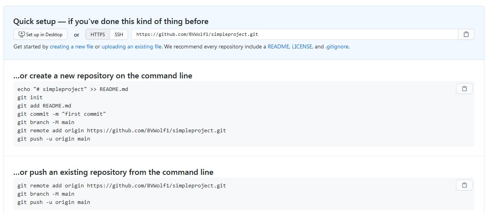

Intro to GitHub
Let's say that you write a paper for an English class and you write a new version each time you want to add new ideas or information. Maybe you remember what your college professor told you that you may want to add to your essay. You save the file as "Essay_1", but you still want to keep track of "Essay_1", while creating "New_Essay1". Your two classmates are helping you with "Essay_1", because Professor Hightower said you can collaborate on this essay. They add an addendum to "Essay_1". Perhaps, something got lost when you saved the new file that you want to go back. The purpose of Git is to keep track of "Essay_1", "New_Essay1" and "Final_NewEssay1" in a single system. Except, instead of essay from a college English course, these are projects created by web developers.
Git was created by Linus Torvalds. He is also the credited for creating the Linux Operating system. Git is a version control system intended for programmers to come together and contribute to the Linux Project. This version control system is essential for web development to share code among eachother.
Like Linux, Git is free and open source. One advantage is the streamlining of workflow, making it easier to change and share files without them getting lost or corrupted.
Git and GitHub Advantages and Use:
- A version control system
- Helps keep track of code as it changes (evolves in some cases)
- It is a professional way to show off code.
- Standard use in the tech industry. Sometimes viewed as a "resume" or "portfolio" of coding.
- Git is a programming language which sole function is pulling and pushing code into a version control system
- Programmers can go back in time to earlier saves in their projects.
- It makes it easier to share code with other programmers. Making group projects less of a pain interms of collaboration.
The graphic above depicts the structure of how repositories typically work on GitHub
The Disdavantages of Git and GitHub:
- Security Risks: As with any hosting site, there are concerns for security.
- On GitHub, to create private repositories, one must pay a premium.
- For Git and anyother version control system, there is some coding involved (commands), which can be a problem for those who are starting with coding. This is a minor concern.
- There is a learning curve for those who have never used a version control system.
- Individuals can just come in and change code.Some programmers, especially ones who are new to programming may not be used to the concept of sharing code, which is the purpose of Git and GitHub in the first place.
Sometimes Git and GitHub are mistakenly interchangebly used. However, there is a difference. Git is the program itself and GitHub is the web service that hosts and manage project files. Although there are other similar services online, GitHub is the most popular for storing Git projects, used by millions worldwide.
This technical guide is a stress-free walkthrough to Git and GitHub.
The Basics
Although this technical guide will primarily discuss how to deploy projects directly to GitHub from the site, it would be beneficial to mention Git along with GitHub. They both go hand-in-hand.
Skills needed for GitHub are:
- Some programming: introductory level of programming or an interest and programming is recommended to learn Git and GitHub. It has "programmy" commands.
- Knowledge of some programming languages: to upload projects. GitHub supports files in all programming languages. HTML and CSS are the most common.
- Some knowledge of how file sharing works. The system is designed to share code among programming peers
- Knowledge of how the Internet works.
Git Commands
The most common way add projects to GitHub is to push code from a local repository to a remote repository.
Below are important commands to help push code onto a repository.
git init- initialises local repositories.git status- checks status of working treegit add- adds files to indexgit commit- commits changes in index
Below are some other important and commonly used commands when using Git and GitHub.
git clone- clones a repository into a new directory.git branch- lists creates or deletes branchesgit push- updates remote refs along with associated objectsgit pull- fetches and integrates with another repository or local branchgit fetch-downloads objects and refs from another repository as well as their associated histories.
There are so many Git commands that range from pushing code onto a repository, creating and accepting pull requests, correcting code in files. These other commands can be found on here in greater details.
Installing Git
In order to get the most out of GitHub, you must install Git version control system onto your computer.
Download Git from the Git website
When asked to choose a default editor used by Git choose the text editor of choice. Although Vim is the default text editor for Git, it is recommended to use a different text editor due to the problems that many programmers have working with it. Text editors such as Visual Studio Code, Atom and even Brackets are good recommendations among many out there.
When the prompt shows "Adjusting name of initial branch in new repositories", it gives two choices.
- Let Git decide: creates a default branch name for new repositories.
- Override the default name for new repositories: allows teams and individual programmers to rename default branches. This is recommended.
Adjusting Path Environment: option 1 or option 2 is best for those who are not previously familiar with Git.
For configurating the terminal emulator to use with Git Bash, choose Use MinTTY (Default Terminal)
Choose default options
Click Install
Pushing to GitHub
To push code from a local repository to GitHub, first sign into GitHub.
Click "New Repository", which is a plus sign in the right hand corner of the page, next to the avatar icon
Where it says Repository Name, add a name of choice, for example "previous projects". It's optional, but doing this will give your fellow programmers an idea of what they're looking at.
Note: the public is default, but you can switch to private if you have a premium account, as mentioned in Intro section.
ReadMe.md file is a description of files that go into details about a project.
Click "New Repository", which is a plus sign in the right hand corner of the page next to the avatar icon on your GitHub account.
Where it says Repository Name, add a name for the repository. This is where your projects (files) will be held. After naming the file, add a description. It is optional, but doing so will give your fellow programmers an idea of what they are looking at.
ReadMe file: A description of files that go into details about the project. This is pretty important.
Next we are going to open the terminal. Set the project as current working directory.
Type pwd into the terminal. This command finds and locates the working directory by specifying the exact location of the folder. The command ls will list contents of the folder.
Initialize the local directory as a Git repository bby typing git init into the terminal.
Add files to the repository (the new local repository). This prepares the files to be staged. The files will be ready for first commit (staged). To do this, type git add into the command line in the terminal.
Committing files: to commit files that you stage for commit in local repository, type git commit -m first commit
Copy the remote repository's URL, It is in the quick setup page on GitHub
Add the URL for the remote repository where your local repository will be pushed. Then type git remote add origin and paste the URL next to the command.
push code in the local repository to GitHub by typing git push -u origin master
Enter the username and password into the terminal command line
View the repository files in GitHub
Pull Requests
What is pulling a request: when you are on GitHub and you come across a repository and you want to change and add to it, pull requests allows the programmer to "ask" the owner of the repository to pull in your changes. To do this, the directions are below.
- Click the Fork button and fork the repository. It will make a copy of the files in the repository in GitHub. When you fork the repository, the forked copy is yours to change and modify.
- click on the clone or download bbutton next to find file. Copy the link. In the terminal type
git cloneand paste the link next to the command. - Create a new branch by typing
git checkout -band the file. Open the ReadMe or file and make changes. The commandgit statuspulls up the status git diffcompares the old changes to new changes made. Typegit add ReadMe.mdand press enter. Add a message for the file for example "found a type in file, changed it."- Click Pull Request. It opens pull requests for the owner of the repository to see the message or request. It shows the commits made to the files and compares the old changes to new.
If the owner likes the pull request, they will merge request with the Confirm Merge button.
Conclusion
Although GitHub is a useful tool to store, change and save code, along with sharing code with other programmers, it can be argued that it is not fool proof. It is a learn curve that takes time to understand and get use to. Although this guide is just touches the surface of GitHub, it is not without flaws. Below is a list of what can go wrong and solutions for when files are not properly pushed on to the repository.
- The terminal does not detect the file that you are trying to push onto the repository. This happens because the file is in the place on the desktop that cannot be located. The best solution is to place the file on where it can be detected by the terminal.
- The file is published. It would say "Cannot Publish Unborn Head". The best way to solve this is to wait until the file is completely published or start over.
References
There are so many resources dedicated to GitHub and Git. Here is a list of sources used to compile this guide below:
This documentation from git-scm.com discusses Git in depth. There is a PDF of the book Pro Git written by Scott Chacon and Ben Straub. The webpage linked is a more indepth guide on Git.
GitHub Docs is an indepth page on how to create an account in GitHub and how to use Github along with managing an account there.
W3schools has a tutorial on how to use GitHub and Git. Some material used in this documentation is sourced from W3Schools.
Three YouTube videos that give a more in depth instruction on how to use Git and GitHub are Brad Traversy's Git and GitHub Crash Course, CodecademyCodecademy quick instruction on how to deploy projects onto repositories and this video on how to pull requests on GitHub. These tutorials aided in the creation of this documentation. Credit is given to the creators of these videos as well.